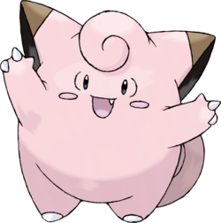
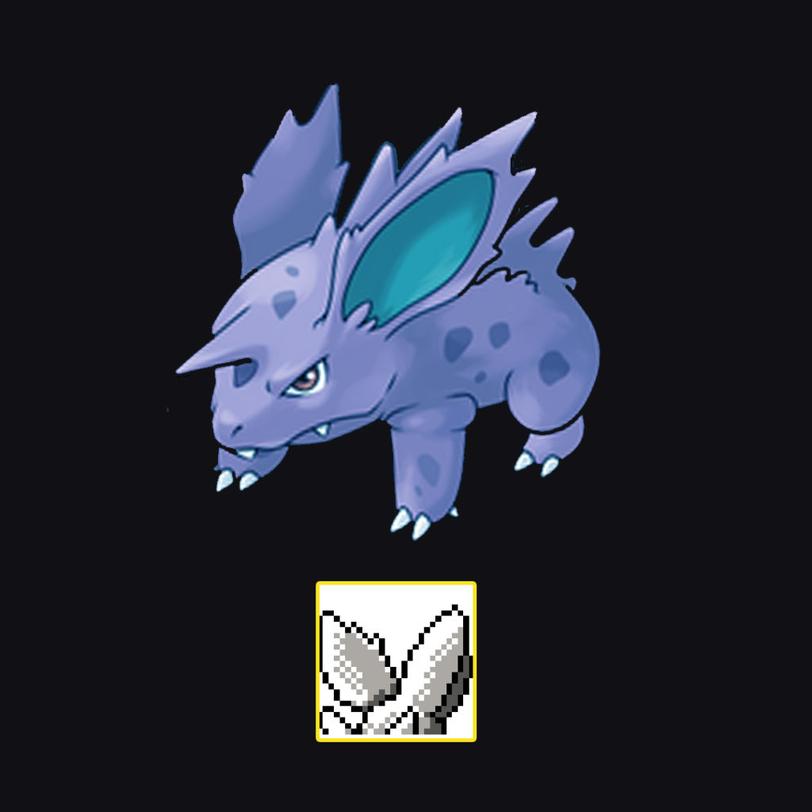
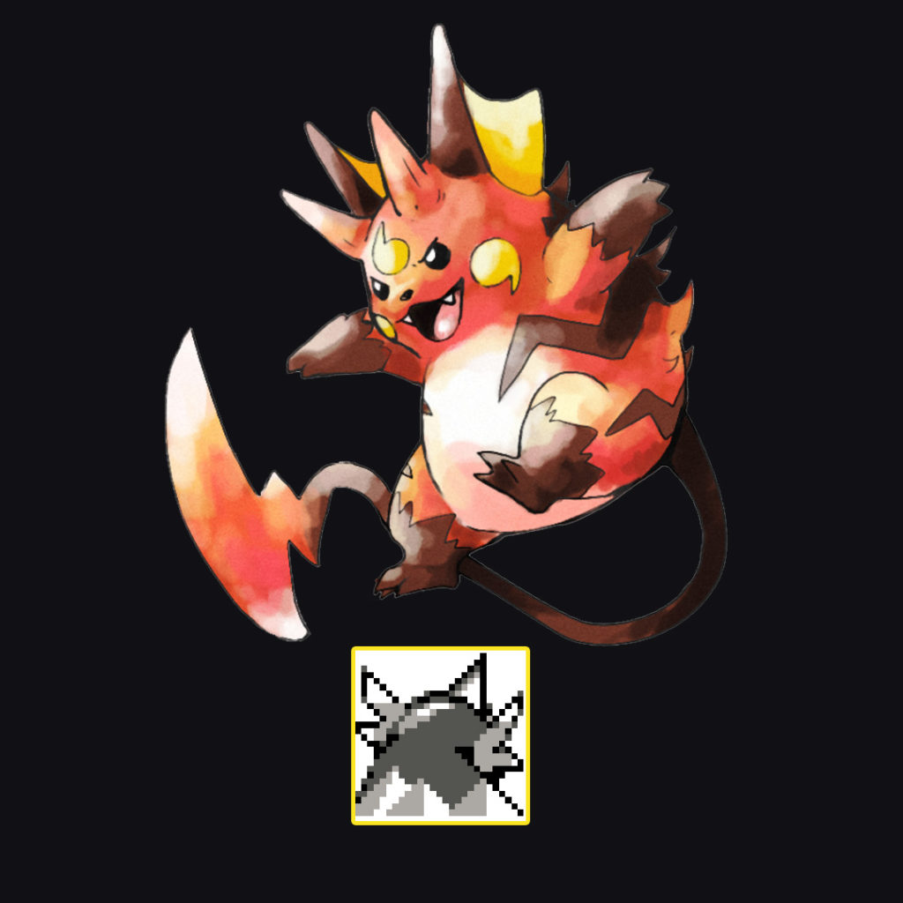
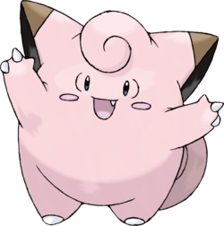
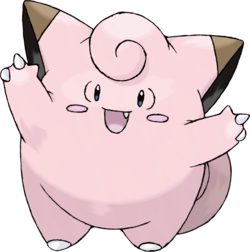
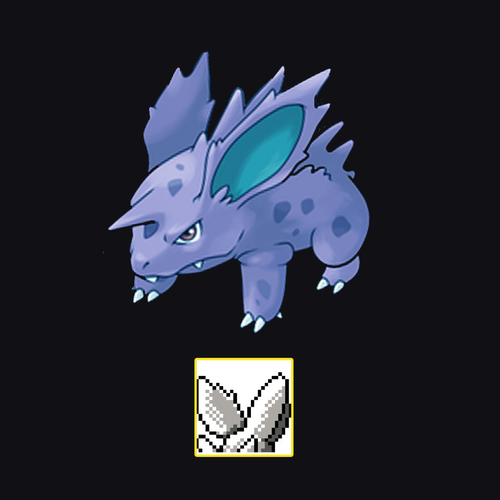
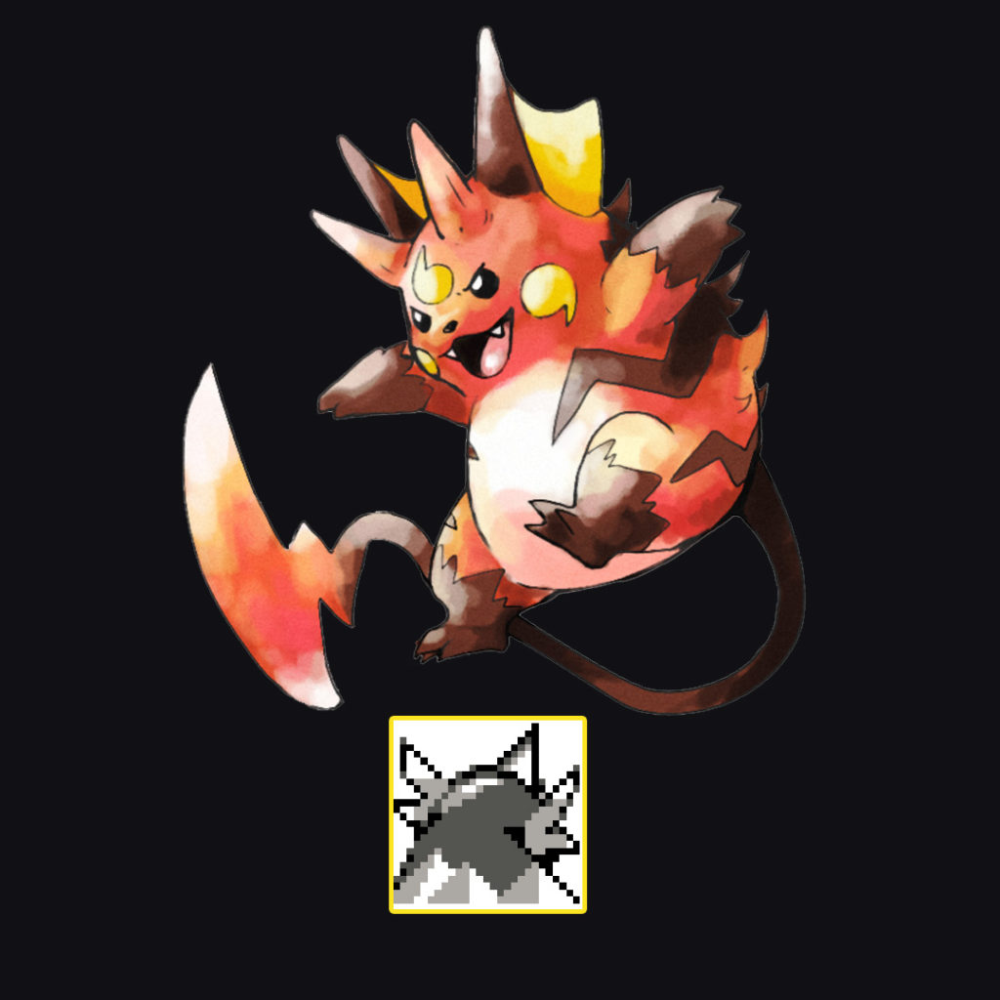
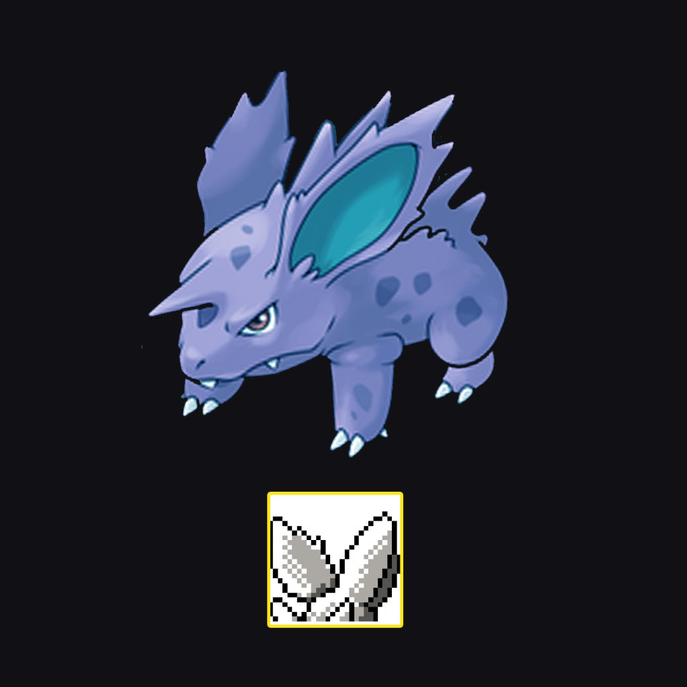
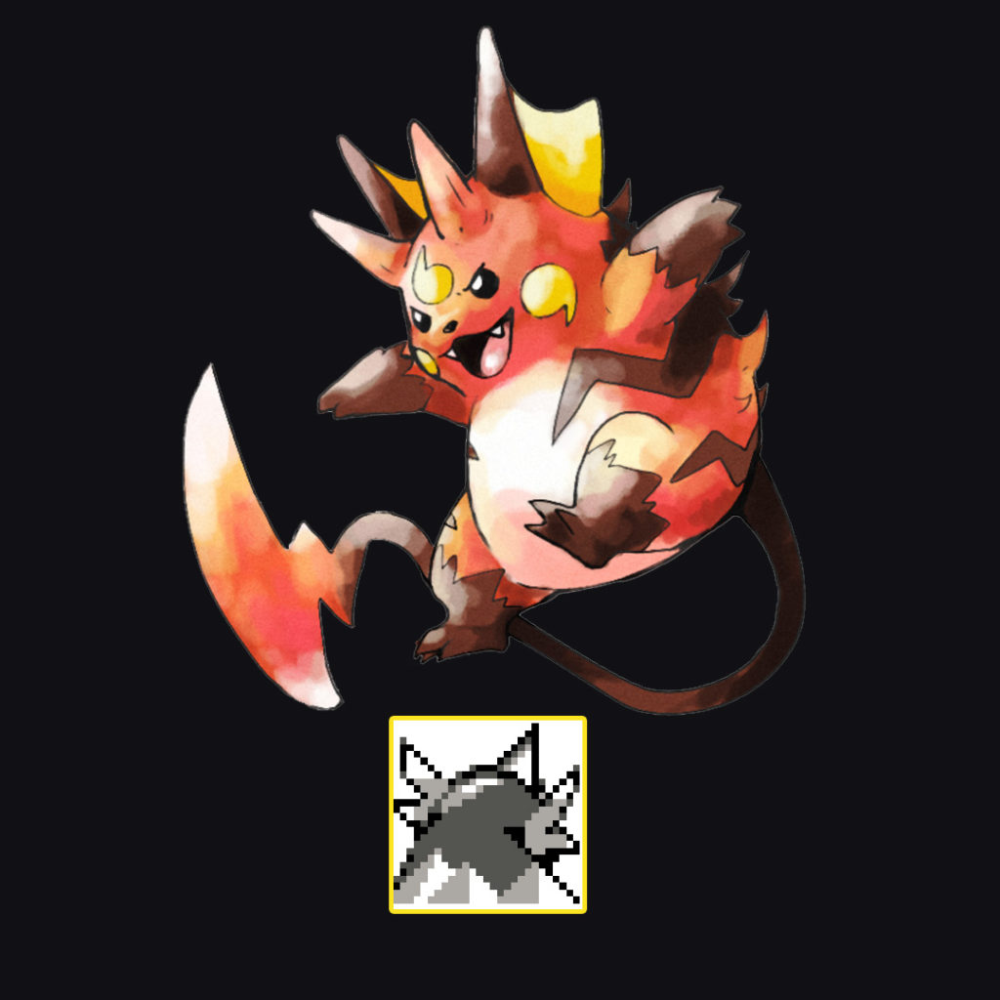

Ici vous trouverez des informations sur les différentes générations de la première à la huitième.
Mais avant tout, parlons de la création de pokémon. Savais-tu que la mascotte de pokémon, le célèbre pikachu, devait à la base être un vulgaire mélofée ? Mais pour se démarquer, pokémon a décidé de changer pour la petite souris jaune.

La première génération
Les 151 pokémons
Des pokémons inconnus ?
La série
Les connais-tu vraiment tous ?
Les 151 pokémons
La première génération de pokémon est arrivé le 27 février 1996. Elle ne comptait que 151 pokémons qui vivent encore aujourd'hui dans les différentes générations.
Des pokémons inconnus ?
Saviez-vous que la première génération devait contenir 190 pokémons sans compter Mew ? Vous connaisez surement les Missingnos, ces pokémons bugués que l'on pouvait faire apparaître grâce à une manipulation sur les premiers jeux. Derrière eux se cachent de nombreux pokémons qui n'ont jamais vu le jour. Les cartouches ne pouvaient pas stocker autant de données, donc Game Freak a dû faire le trie. D'une évolution commune aux deux sexes de Nidoran à une évolution de Raichu, de nombreux pokémons mystérieux n'ont jamais vu le jour. Cliquez ici pour en savoir plus sur eux.

La série
La série pokémon a bersé l'enfance de plus d'un. Cette série qui fut diffusé pour la première fois le 1ère avril 1997 sur TV Tokyo continue d'exister aujourd'hui. Elle en est à sa 23ème saison !!! Mais parlons du générique de la saison une. Ce générique doit être connu par coeur pour tout grand fan qui se respecte. Mais ne vous en faites pas, je vous mets quelques paroles ainsi que la vidéo.
Un jour je serai le meilleur dresseur
Je me battrai sans répit
Je ferai tout pour être vainqueur
Et gagner les défis
Je parcourrai la terre entière
Traquant avec espoir
Les Pokémon et leurs mystères
Le secret de leurs pouvoirs
Les connais-tu vraiment tous ?
Tu es un crac de pokémon et tu les connais tous ou tout simplement un fan des pokémons mignons, est-ce que tu connais tous les pokémons de la première générations ? Si oui, va te tester en cliquant ici.
 
 
